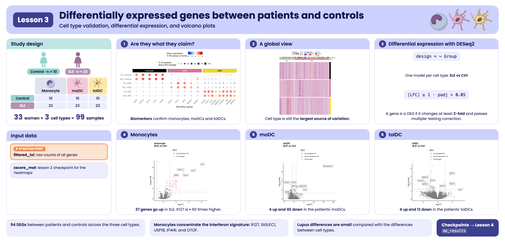
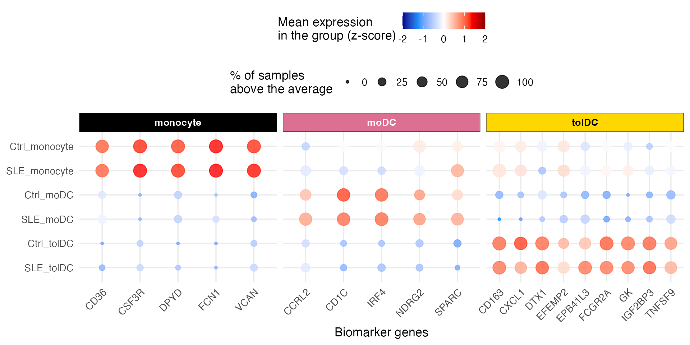
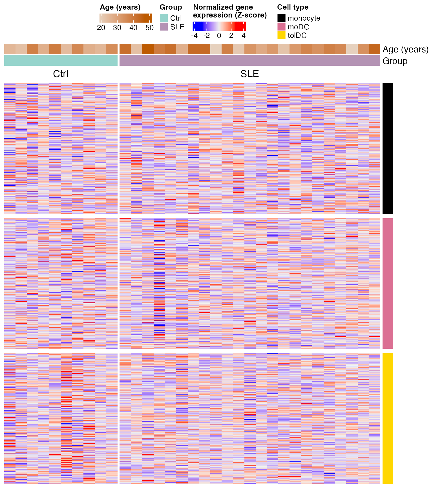
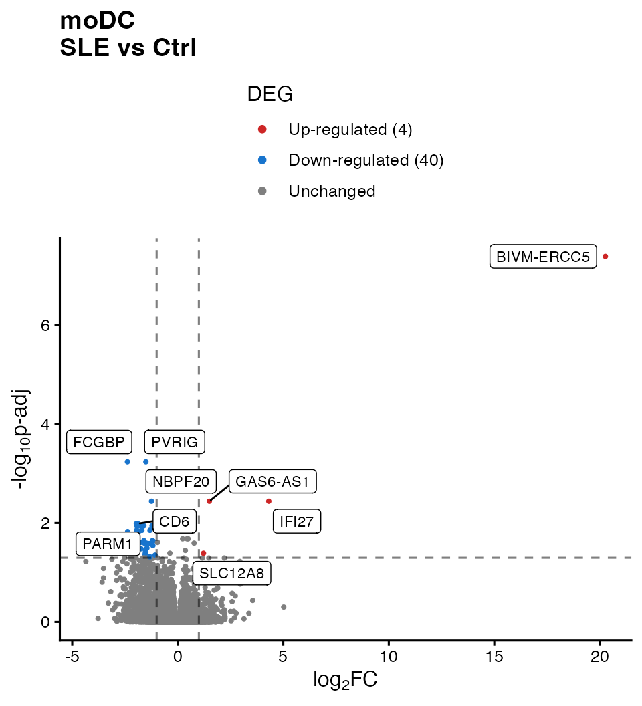
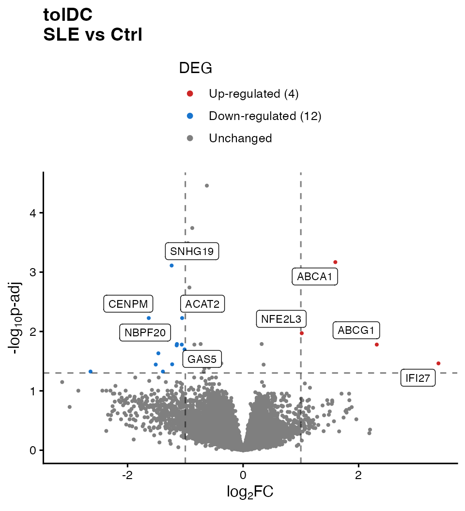
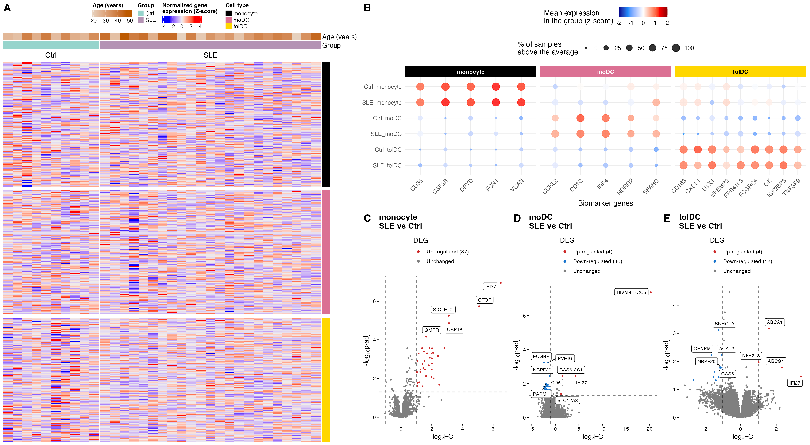

Lesson 3: Differentially expressed genes between patients and controls
Cell type validation, differential expression, and volcano plots
2026-10-31
Código:vignettes/articles/l3_DEGs_en.Rmd
l3_DEGs_en.RmdWelcome
In the previous lessons you met the participants and explored gene expression: you saw that cell type dominates the variation and that some patients have an interferon signature. Now we will ask the central question of the study using statistics: which genes change their expression in lupus, within each cell type?
What you need to know beforehand: having completed the lesson From RNA-seq counts to data exploration (normalization, VST, z-scores, and PCA).
By the end you will be able to:
- Validate the identity of the cell types with biomarker genes.
- Run a differential expression analysis with
DESeq2and understand each column of its results. - Define differentially expressed genes (DEGs) with thresholds on the log2 fold change and the adjusted p-value.
- Build and interpret volcano plots.
- Reproduce Figure 2 of the article.
Estimated time: 1.5 hours.
Lesson map
flowchart LR A["Package data
counts + metadata"] --> B["1. Biomarkers:
are these the right cells?"] A --> C["2. Global heatmap
by cell type"] A --> D["3. DESeq2:
SLE vs Ctrl by cell type"] D --> E["4. DEGs:
|LFC| ≥ 1 and padj < 0.05"] E --> F["5. Volcano plots"] B --> G["Figure 2"] C --> G F --> G
Glossary
These are the terms we will use. Come back here whenever you need to.
- Biomarker: a gene whose expression characterizes a cell type.
- Differential expression: difference in the expression of a gene between two conditions (here, SLE versus Ctrl).
- DEG (differentially expressed gene): a gene that is differentially expressed according to the thresholds we choose.
- Fold change: how many times the expression changes. A fold change of 2 means double.
- log2 fold change (LFC): the fold change on a log2 scale. LFC = 1 is double; LFC = −1, half; LFC = 0, no change.
-
Wald test: test used by
DESeq2to assess whether the LFC is different from zero. - p-value: probability of observing data as extreme as ours if the null hypothesis were true (here, if there were actually no difference).
- Multiple comparisons: when testing thousands of genes, some will come out significant by chance.
- FDR (false discovery rate): expected proportion of false positives among the genes we declare significant.
- Benjamini–Hochberg (BH): method that corrects p-values to control the FDR.
- padj: p-value adjusted by BH. This is the one used to decide.
-
Independent filtering:
DESeq2does not computepadjfor genes with very few reads, because they lack statistical power; they are left asNA. - Volcano plot: plot of the LFC (x axis) against significance (y axis) for all genes.

Visual summary of lesson 3.
1. Setup
library(GeneExprLupusMx) # package data and heatmap functions
library(DESeq2) # differential expression
library(tidyverse) # table manipulation and plots
library(ComplexHeatmap) # heatmaps
library(circlize) # color scales for ComplexHeatmap
library(ggrepel) # non-overlapping labels
library(cowplot) # combine plots into a panelColors and thresholds we will use throughout the lesson:
cell_color <- c(monocyte = "black", moDC = "palevioletred", tolDC = "gold1")
group_color <- c(Ctrl = "#96d4ccff", SLE = "#b493b4ff")
lfc_threshold <- 1 # minimum |log2 fold change|
padj_threshold <- 0.05 # maximum adjusted p-valueStarting point
This lesson uses the package data: the counts
(filtered_txi), the metadata
(metadata_cleaned), the volunteer information
(volunteer_info), and the zscore_mat
checkpoint from the previous lesson.
For the differential expression analysis we start from the
raw counts of all genes. We create a
DESeqDataSet object with the design ~ Group
(SLE versus Ctrl), which we will later split by cell type:
metadata_cleaned$Group <- relevel(metadata_cleaned$Group, ref = "Ctrl")
full_dds <- DESeqDataSetFromTximport(txi = filtered_txi,
colData = metadata_cleaned,
design = ~ Group)
full_dds
#> class: DESeqDataSet
#> dim: 21718 99
#> metadata(1): version
#> assays(2): counts avgTxLength
#> rownames(21718): A1BG A1BG-AS1 ... ZZEF1 ZZZ3
#> rowData names(0):
#> colnames(99): QR011_0 QR011_1 ... QR108_1 QR108_3
#> colData names(14): sample_ID Group ... SLEDAI_Md SLEDAI_categoryWhy don’t we use the dds checkpoint? In
the previous lesson we filtered lowly expressed genes for visualization.
For differential expression this is not needed: DESeq2
applies its own independent filtering and leaves
padj = NA for genes without information. Starting from all
the counts lets DESeq2 decide which genes have enough
information to be tested.
2. Step 1: are the cells what they claim to be?
Before comparing patients against controls, let us check that each sample is of the cell type it claims to be. For this we use biomarkers: genes known to be expressed in one cell type and not in the others.
markers <- list(
monocyte = c("CD36", "CSF3R", "DPYD", "FCN1", "VCAN"),
moDC = c("CD1C", "IRF4", "NDRG2", "CCRL2", "SPARC"), # as in the published Figure 2B
tolDC = c("IGF2BP3", "CD163", "FCGR2A", "DTX1", "GK", "EPB41L3", "TNFSF9", "CXCL1", "EFEMP2")
)
marker_genes <- unlist(markers)
all(marker_genes %in% rownames(zscore_mat)) # are they all in the data?
#> [1] TRUEFor each combination of group and cell type we calculate two numbers per gene, based on the z-scores:
- Mean expression (z-score): positive if the gene is above its average in that group.
- Percentage of samples above the average (z-score > 0): how consistent that expression is across the samples in the group.
marker_df <- as.data.frame(zscore_mat[marker_genes, ]) %>%
rownames_to_column("gene") %>%
pivot_longer(-gene, names_to = "sample_ID", values_to = "expression") %>%
left_join(dplyr::select(metadata_cleaned, sample_ID, Group, Cell_type), by = "sample_ID") %>%
group_by(Group, Cell_type, gene) %>%
summarise(mean_expression = mean(expression),
pct_expressed = 100 * mean(expression > 0),
.groups = "drop") %>%
mutate(condition = paste(Group, Cell_type, sep = "_"),
marker_group = factor(case_when(gene %in% markers$monocyte ~ "monocyte",
gene %in% markers$moDC ~ "moDC",
gene %in% markers$tolDC ~ "tolDC"),
levels = names(markers)))
head(marker_df)
#> # A tibble: 6 × 7
#> Group Cell_type gene mean_expression pct_expressed condition marker_group
#> <fct> <fct> <chr> <dbl> <dbl> <chr> <fct>
#> 1 Ctrl moDC CCRL2 0.451 60 Ctrl_moDC moDC
#> 2 Ctrl moDC CD163 -0.829 20 Ctrl_moDC tolDC
#> 3 Ctrl moDC CD1C 1.18 90 Ctrl_moDC moDC
#> 4 Ctrl moDC CD36 -0.264 20 Ctrl_moDC monocyte
#> 5 Ctrl moDC CSF3R -0.893 0 Ctrl_moDC monocyte
#> 6 Ctrl moDC CXCL1 -0.721 10 Ctrl_moDC tolDCWe plot it as a dot plot: the color is the mean expression and the size is the percentage of samples.
# minimum and maximum mean expression, for the color scale
min_val <- min(marker_df$mean_expression, na.rm = TRUE)
max_val <- max(marker_df$mean_expression, na.rm = TRUE)
p_markers <- marker_df %>%
mutate(condition = factor(condition, levels = c("SLE_tolDC", "Ctrl_tolDC", "SLE_moDC",
"Ctrl_moDC", "SLE_monocyte", "Ctrl_monocyte"))) %>%
ggplot(aes(x = gene, y = condition, color = mean_expression, size = pct_expressed)) +
geom_point(alpha = 0.8) +
scale_color_gradientn(
colors = c("darkblue", "dodgerblue", "white", "red", "darkred"),
values = scales::rescale(c(-2, min_val, 0, max_val, 2)),
limits = c(-2, 2),
oob = scales::squish # values outside [-2, 2] take the color of the end
) +
ggh4x::facet_wrap2(
~ marker_group, scales = "free_x", nrow = 1,
strip = ggh4x::strip_themed(
background_x = lapply(cell_color, function(col) element_rect(fill = col)),
text_x = list(element_text(color = "white", face = "bold"),
element_text(color = "white", face = "bold"),
element_text(color = "black", face = "bold")))) +
labs(x = "Biomarker genes", y = NULL,
color = "Mean expression\nin the group (z-score)",
size = "% of samples\nabove the average") +
theme_minimal(base_size = 13) +
theme(legend.position = "top", legend.box = "vertical",
axis.text.x = element_text(angle = 45, hjust = 1))
p_markers
What do you observe? Each group of biomarkers is red (high expression) exactly in its own cell type, in both controls and patients, and blue in the others. The identity of the samples is correct: we can trust the comparisons we will make.
3. Step 2: a global view with a heatmap
Before the statistics, let us look at all the genes at once. We will calculate the z-scores within each cell type (not across all samples), so that the color shows how each sample compares with the others of its own cell type.
The package function get_heatmap_mat() applies the VST
transformation, removes genes with no variation, and calculates the
z-scores:
cell_types <- c("monocyte", "moDC", "tolDC")
heatmap_mats <- lapply(cell_types, function(cell) {
mat <- get_heatmap_mat(full_dds[, full_dds$Cell_type == cell])
colnames(mat) <- sub("_.*", "", colnames(mat)) # QR011_0 -> QR011
mat
})
names(heatmap_mats) <- cell_types
sapply(heatmap_mats, nrow) # genes with variation in each cell type
#> monocyte moDC tolDC
#> 17142 16986 18045We rename the columns with the volunteer identifier
(QR011_0 → QR011): this way, in the three
heatmaps, each column is the same person. We keep the
genes present in all three and order the volunteers by group and disease
activity:
common_genes <- Reduce(intersect, lapply(heatmap_mats, rownames))
length(common_genes)
#> [1] 16283
sample_info <- volunteer_info %>%
arrange(Group, SLEDAI)
heatmap_mats <- lapply(heatmap_mats, function(mat) mat[common_genes, sample_info$Volunteer_ID])Now we build one heatmap per cell type with the package’s
create_heatmap() and stack them. At the top we add two
annotations: the age and the group of each volunteer.
top_annotation <- HeatmapAnnotation(
"Age (years)" = sample_info$Age_years,
Group = sample_info$Group,
col = list("Age (years)" = colorRamp2(range(sample_info$Age_years), c("#e6d1be", "#bd5a00")),
Group = group_color),
annotation_legend_param = list("Age (years)" = list(direction = "horizontal"))
)
heatmap_list <- create_heatmap(heatmap_mats$monocyte, cell_color[["monocyte"]], sample_info$Group) %v%
create_heatmap(heatmap_mats$moDC, cell_color[["moDC"]], sample_info$Group) %v%
create_heatmap(heatmap_mats$tolDC, cell_color[["tolDC"]], sample_info$Group)
cell_legend <- Legend(labels = cell_types, title = "Cell type",
legend_gp = grid::gpar(fill = cell_color))
ht_opt$message <- FALSE
draw(top_annotation %v% heatmap_list,
merge_legends = TRUE, annotation_legend_list = list(cell_legend),
annotation_legend_side = "top", heatmap_legend_side = "top")
Each block is a cell type (color bar on the right), each row a gene, and each column a volunteer. No obvious pattern separates patients from controls: the differences, if they exist, are in relatively few genes and cannot be seen at a glance among more than 16,000. To find them we need statistics.
4. Step 3: differential expression with DESeq2
4.1 The question
For each gene, in each cell type, we ask: is its expression different in patients than in controls? We do the analysis separately for each cell type, because we already saw (in the PCA of the previous lesson) that cell type is the largest source of variation: mixing them would mask the differences due to lupus.
4.2 Step by step with monocytes
We select the 33 monocyte samples:
dds_mo <- full_dds[, full_dds$Cell_type == "monocyte"]
dds_mo$Cell_type <- droplevels(dds_mo$Cell_type) # remove levels that no longer exist
design(dds_mo) # ~ Group
#> ~Group
table(dds_mo$Group)
#>
#> Ctrl SLE
#> 10 23DESeq() does the whole analysis in a single function, in
three steps:
- Normalization: estimates the size factors (as in the previous lesson).
- Dispersion: estimates how much each gene varies between replicates of the same group.
- Model and test: fits a negative binomial model and uses the Wald test to assess whether the LFC between groups is different from zero.
dds_mo <- DESeq(dds_mo, quiet = TRUE)
resultsNames(dds_mo) # available comparisons
#> [1] "Intercept" "Group_SLE_vs_Ctrl"We extract the Group_SLE_vs_Ctrl comparison (SLE against
the reference, Ctrl):
res_mo <- results(dds_mo, name = "Group_SLE_vs_Ctrl")
head(res_mo[order(res_mo$padj), ])
#> log2 fold change (MLE): Group SLE vs Ctrl
#> Wald test p-value: Group SLE vs Ctrl
#> DataFrame with 6 rows and 6 columns
#> baseMean log2FoldChange lfcSE stat pvalue padj
#> <numeric> <numeric> <numeric> <numeric> <numeric> <numeric>
#> IFI27 745.809 6.50566 0.965817 6.73591 1.62908e-11 1.13758e-07
#> OTOF 725.570 5.08949 0.819047 6.21392 5.16796e-10 1.80439e-06
#> SIGLEC1 8360.445 3.11093 0.521640 5.96375 2.46508e-09 5.73787e-06
#> USP18 758.460 3.12316 0.541137 5.77148 7.85805e-09 1.37182e-05
#> GMPR 403.561 1.64509 0.301470 5.45691 4.84500e-08 6.76652e-05
#> IFI44L 6547.050 2.82422 0.550876 5.12678 2.94735e-07 2.72543e-04What does each column mean?
| Column | Meaning |
|---|---|
baseMean |
Mean normalized expression of the gene across all samples |
log2FoldChange |
LFC of SLE against Ctrl: positive = higher in patients; negative = lower |
lfcSE |
Standard error of the LFC (uncertainty of the estimate) |
stat |
Wald test statistic (LFC / lfcSE) |
pvalue |
p-value of the Wald test |
padj |
p-value adjusted by Benjamini–Hochberg (the one we use to decide) |
IFI27 tops the list: its LFC of 6.5 means that in the
patients’ monocytes it is expressed about 26.5 ≈ 90 times
more than in controls. It is one of the interferon signature genes you
saw in the previous lesson.
summary(res_mo, alpha = padj_threshold)
#>
#> out of 17139 with nonzero total read count
#> adjusted p-value < 0.05
#> LFC > 0 (up) : 76, 0.44%
#> LFC < 0 (down) : 8, 0.047%
#> outliers [1] : 0, 0%
#> low counts [2] : 10159, 59%
#> (mean count < 381)
#> [1] see 'cooksCutoff' argument of ?results
#> [2] see 'independentFiltering' argument of ?resultsWhy so many NA values in
padj? This is the independent
filtering: genes with very few reads lack the power to detect
differences, so DESeq2 excludes them from the multiple
comparisons correction. This gains power for the rest. Genes with
extreme values (outliers) can also end up as NA.
These genes are not considered in the analysis.
4.3 The three cell types
We repeat the same for each cell type with a function. We store the results as tables, with the gene name in a column:
run_de <- function(cell) {
dds_cell <- full_dds[, full_dds$Cell_type == cell]
dds_cell$Cell_type <- droplevels(dds_cell$Cell_type)
dds_cell <- DESeq(dds_cell, quiet = TRUE)
results(dds_cell, name = "Group_SLE_vs_Ctrl") %>%
as.data.frame() %>%
rownames_to_column("gene")
}
de_results <- lapply(cell_types, run_de)
names(de_results) <- cell_types
sapply(de_results, nrow)
#> monocyte moDC tolDC
#> 21718 21718 217185. Step 4: which genes change?
A gene is differentially expressed (DEG) if it meets two conditions:
-
Statistical significance:
padj < 0.05. -
Magnitude of change:
|log2FoldChange| ≥ 1, that is, at least double or half.
Requiring both avoids keeping genes that change “significantly” but very little, and genes that change a lot but unreliably.
classify_deg <- function(df) {
df %>%
filter(!is.na(padj)) %>%
mutate(Expression = case_when(
log2FoldChange >= lfc_threshold & padj < padj_threshold ~ "Up-regulated",
log2FoldChange <= -lfc_threshold & padj < padj_threshold ~ "Down-regulated",
TRUE ~ "Unchanged"))
}
de_classified <- lapply(de_results, classify_deg)
sapply(de_classified, function(df) table(factor(df$Expression,
levels = c("Up-regulated", "Down-regulated", "Unchanged"))))
#> monocyte moDC tolDC
#> Up-regulated 37 4 4
#> Down-regulated 0 40 12
#> Unchanged 6946 15313 13146| Cell type | Up in SLE | Down in SLE |
|---|---|---|
| Monocytes | 37 | 0 |
| moDC | 4 | 40 |
| tolDC | 4 | 12 |
In monocytes all the changes are increases; in dendritic cells differentiated in vitro, decreases predominate.
Challenge 1. How many genes go up and down in each
cell type if you use |LFC| ≥ 0.5 instead of 1?
Hint: change lfc_threshold and apply
classify_deg() again.
Show solution
lfc_threshold <- 0.5
sapply(lapply(de_results, classify_deg), function(df) table(factor(df$Expression,
levels = c("Up-regulated", "Down-regulated", "Unchanged"))))
#> monocyte moDC tolDC
#> Up-regulated 58 6 5
#> Down-regulated 6 42 26
#> Unchanged 6919 15309 13131
lfc_threshold <- 1 # return to the original thresholdWith a more permissive threshold more DEGs appear (for example, 58 instead of 37 in monocytes). The choice of threshold changes the results, which is why it must always be reported.
6. Step 5: volcano plots
6.1 How to read a volcano plot
A volcano plot shows all the genes of a comparison:
- x axis — log2 fold change: to the right, genes higher in SLE; to the left, lower.
-
y axis — −log10(padj): the higher up, the more
significant. A
padjof 0.05 sits at 1.3; one of 0.0001, at 4. - Dashed lines: the thresholds. Genes above the horizontal line and outside the vertical ones are DEGs.
The “volcano” shape appears because genes with large changes tend to also be the most significant.
6.2 A function for the three cell types
We write a function that colors the genes according to their
classification, draws the thresholds, and labels the 5 most significant
genes in each direction (you can change this with
n_labels):
plot_volcano <- function(df, title, n_labels = 5) {
n_up <- sum(df$Expression == "Up-regulated")
n_down <- sum(df$Expression == "Down-regulated")
df <- df %>%
mutate(DEG = factor(Expression,
levels = c("Up-regulated", "Down-regulated", "Unchanged"),
labels = c(paste0("Up-regulated (", n_up, ")"),
paste0("Down-regulated (", n_down, ")"),
"Unchanged")))
deg_colors <- setNames(c("firebrick3", "dodgerblue3", "gray50"), levels(df$DEG))
# genes to label: the most significant in each direction
top_genes <- df %>%
filter(Expression != "Unchanged") %>%
group_by(Expression) %>%
arrange(padj, desc(abs(log2FoldChange)), .by_group = TRUE) %>%
slice_head(n = n_labels) %>%
ungroup()
ggplot(df, aes(x = log2FoldChange, y = -log10(padj))) +
geom_point(aes(color = DEG), size = 0.7) +
geom_vline(xintercept = c(-lfc_threshold, lfc_threshold), linetype = "dashed", alpha = 0.5) +
geom_hline(yintercept = -log10(padj_threshold), linetype = "dashed", alpha = 0.5) +
geom_label_repel(data = top_genes, aes(label = gene), size = 3, max.overlaps = Inf) +
scale_color_manual(values = deg_colors) +
guides(color = guide_legend(override.aes = list(size = 1.5))) +
labs(title = title, color = "DEG",
x = expression("log"[2] * "FC"), y = expression("-log"[10] * "p-adj")) +
theme_classic(base_size = 12) +
theme(plot.title = element_text(face = "bold"), legend.position = "top",
legend.direction = "vertical")
}6.3 Monocytes
p_volcano_mo <- plot_volcano(de_classified$monocyte, "monocyte\nSLE vs Ctrl")
p_volcano_mo
The 37 DEGs in monocytes go up in patients, and
almost none goes down. The most significant ones (IFI27,
SIGLEC1, USP18, IFI44L,
OTOF) are interferon-stimulated genes:
this is the interferon signature you saw in the previous lesson, now
confirmed with statistics.
6.4 moDC
p_volcano_modc <- plot_volcano(de_classified$moDC, "moDC\nSLE vs Ctrl")
p_volcano_modc
In moDC the pattern is reversed: genes that go down
predominate (40) and only 4 go up. IFI27 still
appears among those that go up.
Beware of extreme LFCs. BIVM-ERCC5
appears with an LFC close to 20 (a million times higher). Values like
this are usually due to genes with almost zero reads in one of
the groups: dividing by a nearly null number inflates the
fold change. Before interpreting such a gene, check its
normalized counts. DESeq2 offers lfcShrink()
to obtain more realistic LFCs in these cases.
6.5 tolDC
p_volcano_toldc <- plot_volcano(de_classified$tolDC, "tolDC\nSLE vs Ctrl")
p_volcano_toldc
In tolDC there are 4 genes that go up and 12 that go down. Among
those that go up are ABCA1 and ABCG1,
cholesterol transporters: a hint of alterations in lipid
metabolism, which we will explore in the next lesson.
6.6 Which genes do the cell types share?
up_genes <- lapply(de_classified, function(df) df$gene[df$Expression == "Up-regulated"])
down_genes <- lapply(de_classified, function(df) df$gene[df$Expression == "Down-regulated"])
Reduce(intersect, up_genes) # up in all three cell types
#> [1] "IFI27"
intersect(down_genes$moDC, down_genes$tolDC) # down in moDC and tolDC
#> [1] "NBPF20"
c(up = length(unique(unlist(up_genes))), down = length(unique(unlist(down_genes))))
#> up down
#> 43 51IFI27 goes up in all three cell types:
it is a shared mark of lupus that persists even after differentiating
the cells in vitro. In total there are 94 distinct
DEGs (43 up and 51 down); in the next lesson we will find out
which biological functions they have.
Challenge 2. Make a table with the LFC and
padj of IFI27, USP18, and
SIGLEC1 in the three cell types. In which one does each
gene change the most?
Hint: bind_rows(de_results, .id = "Cell_type")
joins the three tables into one.
Show solution
bind_rows(de_results, .id = "Cell_type") %>%
filter(gene %in% c("IFI27", "USP18", "SIGLEC1")) %>%
dplyr::select(gene, Cell_type, log2FoldChange, padj) %>%
arrange(gene, Cell_type)
#> gene Cell_type log2FoldChange padj
#> 1 IFI27 moDC 4.31361093 3.635566e-03
#> 2 IFI27 monocyte 6.50565571 1.137584e-07
#> 3 IFI27 tolDC 3.38219155 3.445094e-02
#> 4 SIGLEC1 moDC -0.42105695 9.995599e-01
#> 5 SIGLEC1 monocyte 3.11093020 5.737873e-06
#> 6 SIGLEC1 tolDC 0.04520298 9.765996e-01
#> 7 USP18 moDC 0.47562454 5.871915e-01
#> 8 USP18 monocyte 3.12316050 1.371820e-05
#> 9 USP18 tolDC 0.74759493 1.489008e-01All three genes change the most in monocytes. IFI27 is
the only one significant in all three cell types.
Challenge 3. Save the moDC DEGs to a CSV file,
sorted by padj.
Hint: filter(), arrange(), and
write.csv().
7. To finish: Figure 2 of the article
We bring everything together in Figure 2. The
ComplexHeatmap heatmap is not a ggplot2 plot,
so we first “capture” it as a graphical object with
grid::grid.grabExpr() so that we can combine it with the
others:
p_heatmap <- grid::grid.grabExpr(
draw(top_annotation %v% heatmap_list,
merge_legends = TRUE, annotation_legend_list = list(cell_legend),
annotation_legend_side = "top", heatmap_legend_side = "top"),
wrap.grobs = TRUE # keeps the drawing code so it can be redrawn inside the panel
)
right_panels <- plot_grid(
p_markers,
plot_grid(p_volcano_mo, p_volcano_modc, p_volcano_toldc,
labels = c("C", "D", "E"), label_size = 18, nrow = 1),
labels = c("B", ""), label_size = 18, ncol = 1, rel_heights = c(0.9, 1)
)
figure_2 <- plot_grid(p_heatmap, right_panels, labels = c("A", ""), label_size = 18,
nrow = 1, rel_widths = c(0.8, 1))
figure_2
# Number of DEGs per cell type, for the figure caption
up_n <- function(cell) sum(de_classified[[cell]]$Expression == "Up-regulated")
down_n <- function(cell) sum(de_classified[[cell]]$Expression == "Down-regulated")Figure 2. Validation of the cell types and integrated transcriptomic profile between groups. (A) Heatmap of normalized gene expression, with genes in the rows and samples in the columns, for monocytes, moDC, and tolDC differentiated in vitro. The color scale represents the normalized counts as z-scores. At the top, the age and group of each volunteer (SLE or Ctrl) are annotated. (B) Biomarkers specific to each cell type. The color scale indicates the mean expression per group (z-score) and the dot size indicates the percentage of samples above the average of each gene. Each column is a biomarker of the cell type indicated above. (C–E) Volcano plots of the genes differentially expressed between groups in (C) monocytes (37 up and 0 down in SLE), (D) moDC (4 up and 40 down), and (E) tolDC (4 up and 12 down). DEGs were selected with |LFC| ≥ 1 and padj < 0.05, using the Wald test with Benjamini–Hochberg correction (FDR).
The original figure can be found in the article.
To save it in high resolution:
ggsave("Figure_2.png", figure_2, width = 20, height = 11, dpi = 300)8. Checkpoint for the next lesson
You do not need to save anything: the package includes the result of
this lesson under the same name, de_results (the
DESeq2 results for the three cell types). The next lesson
will start from there.
9. Summary
| Step | Key function | What for? |
|---|---|---|
| Validate cell types | biomarker dot plot | Confirm the identity of the samples |
| Global view |
get_heatmap_mat(), create_heatmap()
|
See the expression of all genes |
| Differential expression |
DESeq(), results()
|
Test each gene: SLE versus Ctrl |
| Define DEGs |
padj < 0.05 and |LFC| ≥ 1
|
Keep reliable and relevant changes |
| Visualize | volcano plot | See the magnitude and significance of all genes |
| Compare cell types | intersect() |
Find shared changes |
Common beginner mistakes
-
Using
pvalueinstead ofpadj: with thousands of genes, hundreds would come out significant by chance. - Mixing all cell types in a single comparison: variation between cell types masks the differences due to lupus.
- Interpreting a huge LFC without checking the counts: it may come from genes with almost no reads.
- Not reporting the thresholds: the number of DEGs depends on them.
- Thinking that “not a DEG” means “does not change”: with 10 controls, statistical power is limited.
10. Next steps
We have identified which genes change between patients and controls. The lesson Biological functions of differentially expressed genes addresses what functions they perform: through a functional enrichment analysis, we will associate the 94 DEGs with biological processes and pathways from Gene Ontology and Reactome.
To continue, click the Next lesson: Biological functions of DEGs button at the bottom of this page.
↑ Back to topSession information
sessionInfo()
#> R version 4.6.0 (2026-04-24)
#> Platform: aarch64-apple-darwin23
#> Running under: macOS Tahoe 26.6.2
#>
#> Matrix products: default
#> BLAS: /Library/Frameworks/R.framework/Versions/4.6/Resources/lib/libRblas.0.dylib
#> LAPACK: /Library/Frameworks/R.framework/Versions/4.6/Resources/lib/libRlapack.dylib; LAPACK version 3.12.1
#>
#> locale:
#> [1] en_US.UTF-8/en_US.UTF-8/en_US.UTF-8/C/en_US.UTF-8/en_US.UTF-8
#>
#> time zone: America/Mexico_City
#> tzcode source: internal
#>
#> attached base packages:
#> [1] grid stats4 stats graphics grDevices utils datasets
#> [8] methods base
#>
#> other attached packages:
#> [1] cowplot_1.2.0 ggrepel_0.9.8
#> [3] circlize_0.4.18 ComplexHeatmap_2.28.0
#> [5] lubridate_1.9.5 forcats_1.0.1
#> [7] stringr_1.6.0 dplyr_1.2.1
#> [9] purrr_1.2.2 readr_2.2.0
#> [11] tidyr_1.3.2 tibble_3.3.1
#> [13] ggplot2_4.0.3 tidyverse_2.0.0
#> [15] DESeq2_1.52.0 SummarizedExperiment_1.42.0
#> [17] Biobase_2.72.0 MatrixGenerics_1.24.0
#> [19] matrixStats_1.5.0 GenomicRanges_1.64.0
#> [21] Seqinfo_1.2.0 IRanges_2.46.0
#> [23] S4Vectors_0.50.1 BiocGenerics_0.58.1
#> [25] generics_0.1.4 GeneExprLupusMx_0.1.0.9000
#>
#> loaded via a namespace (and not attached):
#> [1] tidyselect_1.2.1 farver_2.1.2 S7_0.2.2
#> [4] fastmap_1.2.0 digest_0.6.39 timechange_0.4.0
#> [7] lifecycle_1.0.5 cluster_2.1.8.2 magrittr_2.0.5
#> [10] compiler_4.6.0 rlang_1.3.0 sass_0.4.10
#> [13] tools_4.6.0 utf8_1.2.6 yaml_2.3.12
#> [16] knitr_1.51 labeling_0.4.3 S4Arrays_1.12.0
#> [19] htmlwidgets_1.6.4 DelayedArray_0.38.2 RColorBrewer_1.1-3
#> [22] abind_1.4-8 BiocParallel_1.46.0 withr_3.0.3
#> [25] desc_1.4.3 ggh4x_0.3.1 colorspace_2.1-3
#> [28] scales_1.4.0 iterators_1.0.14 cli_3.6.6
#> [31] rmarkdown_2.31 crayon_1.5.3 ragg_1.5.2
#> [34] otel_0.2.0 rstudioapi_0.19.0 tzdb_0.5.0
#> [37] rjson_0.2.23 cachem_1.1.0 parallel_4.6.0
#> [40] XVector_0.52.0 vctrs_0.7.3 Matrix_1.7-5
#> [43] jsonlite_2.0.0 hms_1.1.4 GetoptLong_1.1.1
#> [46] clue_0.3-68 magick_2.9.1 systemfonts_1.3.2
#> [49] locfit_1.5-9.12 foreach_1.5.2 jquerylib_0.1.4
#> [52] glue_1.8.1 pkgdown_2.2.1 codetools_0.2-20
#> [55] shape_1.4.6.1 stringi_1.8.9 gtable_0.3.6
#> [58] pillar_1.11.1 htmltools_0.5.9 R6_2.6.1
#> [61] textshaping_1.0.5 doParallel_1.0.17 evaluate_1.0.5
#> [64] lattice_0.22-9 png_0.1-9 bslib_0.11.0
#> [67] Rcpp_1.1.2 SparseArray_1.12.2 xfun_0.60
#> [70] fs_2.1.0 pkgconfig_2.0.3 GlobalOptions_0.1.4